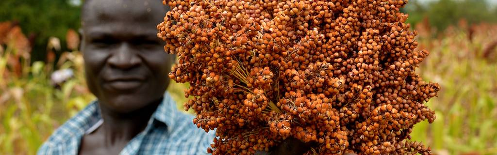

Turning CGIAR’s climate research into coordinated actionD1

The five areas of workD2
As published on cgiar.org. Counts are catalogued items sitting under each, computed at page load.
The alternative spine, ten editorial themes built from item tags, is on the More page. No CGIAR climate-terms taxonomy exists, so only this one is externally verifiable. Decision D2 chooses between them.
Start with these fourD3
The one place this site takes a view rather than listing everything. Four climate records, with resolution, coverage, cadence and licence stated against each.
These four are CHIRPS, ERA5, AgERA5 and GLW4, carried over from Concept C where they were chosen by the build team. No stated rule decides what belongs here. Decision D3 writes that rule and names who applies it.
Latest threeD6
Find evidence → Funding calls and events →
What came off this page, and where it went
Concept C’s home page carried ten blocks. This one carries four. Nothing was deleted from the site: everything below still exists, one click away.
| Taken off the home page | Now at | The note it answers |
|---|---|---|
| Programme targets strip | More | Targets state what the programme promises, not what a visitor can do. Ibukun, 01/09/2026: too many features confuse even the ideal user. |
| Four vantage points | Replaced by one search field and one spine | “A lot of overlap between Datasets, Tools, and Catalog”, Brayden Youngberg, 13/08/2026. Ibukun, 01/09/2026: the site must be opinionated. |
| Weekly spotlight | More | No named editor and no refresh cycle. Freshness risk raised 13/08/2026. |
| Full-bleed hero and mid-page photo band | Removed; hero is now a split panel | Ibukun, 01/09/2026: C and D read as the same site because of the hero image. |
| Ten editorial themes | More | “The tab themes overlap a lot, need more diffierentiation”, Peter Steward, 11/08/2026. |
| Experts map and list | More | Round 3 criticised it for having no search. Kept, deprioritised, and the fault left visible. |
| Full latest-publications list | Cut to three, full list under Find evidence | Lean V1. Analytics decide whether it earns a longer slot in V2. |
Every row cites a note in the feedback record. Rows attributed to 01/09/2026 come from John’s meeting notes of that date and have not been confirmed in writing by the speaker.